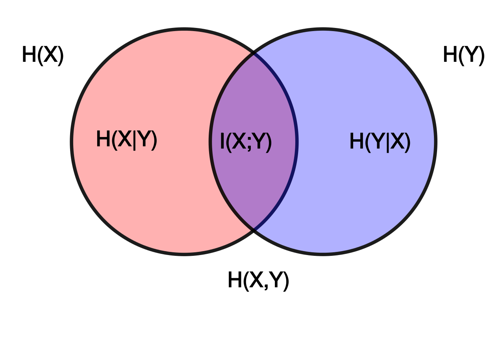

12. 信息熵
12.1. 信息熵
信息熵：
条件熵（给定随机变量 \(Y\) ，对随机变量 \(X\) 仍存在的平均不确定性）：
Differential entropy（连续状态下的熵）：
其中 \(f(x)\) 是概率密度函数（probability density function）。
12.2. 互信息
{kind=link}
互信息（mutual information，MI） \(I(X, Y)\) 总体上表示每传递一个符号所传递的平均信息量，衡量了两个随机变量的独立性。
对于连续变量，将 \(H(X)\) 替换为 \(h(f)\) 。
12.3. KL 散度
KL 散度（Kullback–Leibler divergence 或 relative entropy），衡量了两种概率分布的差异性，KL 散度为 0 表示同分布。
12.4. 交叉熵
交叉熵（Cross entropy）在信息论中的含义：基于相同事件测度的两个概率分布 \(p\) （“真实”分布）和 \(q\) （“估测”分布），当基于概率分布 \(q\) 进行编码时，在事件集合中唯一标识一个事件所需要的平均比特数。
定义：
离散分布：
连续分布（假设 \(p\) 和 \(q\) 在测度 \(r\) 上是绝对连续的， \(P\) 和 \(Q\) 分别为 \(p\) 的 \(q\) 在测度 \(r\) 上的概率密度函数）：
最小化 KL 散度就是最小化分布之间的交叉熵。
12.5. Jensen’s inequality

- 凸函数
实数域函数 \(f\) 是凸函数，满足 \(f^{\prime\prime} \geqslant 0\) （高维对应 hessian matrix \(H \geqslant 0\) ）。
- Jensen 不等式
凸函数 \(f\) ，随机变量 \(X\) ，则 \(E[f(X)] \geqslant f(E[X])\) ； \(E[f(X)] = f(E[X])\) 当且仅当 \(X \equiv E[X]\) （常数）。
- 应用
对任意
\[\begin{split}f(x) = - \log x,\ x > 0 \\ \sum_i p_i = 1,\ 0 \leqslant p_i \leqslant 1 \\ \sum_i q_i = 1,\ 0 \leqslant q_i \leqslant 1 \\\end{split}\]有
\[\sum_i p_i f(x_i) \geqslant f(\sum_i p_i x_i),\]即
\[\sum_i p_i \log x_i \leqslant \log (\sum_i p_i x_i).\]令
\[x_i = \frac{q_i}{p_i} > 0,\]得
\[\sum_i p_i \log q_i - \sum_i p_i \log p_i \leqslant \log (\sum_i p_i \frac{q_i}{p_i}) =\ 0,\]即
\[- \sum_i p_i \log p_i \leqslant - \sum_i p_i \log q_i.\]
12.6. 参考资料
Entropy
Mutual information
KL divergence
Cross entropy
Jensen’s inequality